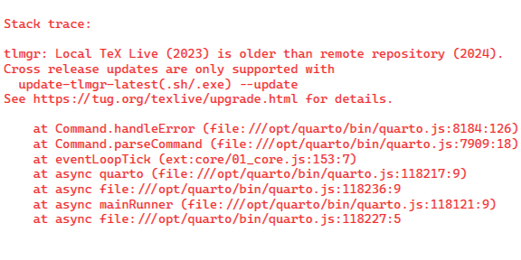
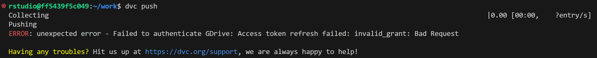

はじめに
環境構築に関する記事をいくつかまとめてきましたが、頻繁にエラーに直面するので、その場合の対処法をまとめていきます。
本記事は随時更新します。
関連するエラーや不明点については一番下のコメントに書いていただけると幸いです。
発生環境に「開発コンテナ内」とあるのは、基本的にこの記事で紹介した環境を指します。
Python のパス
- 発生環境：開発コンテナ内
- エラーが発生したコマンド：
Terminal
dvc init- 発生したエラー：「bash: /home/rstudio/.cache/pip/bin/dvc: /usr/local/bin/python: bad interpreter: No such file or directory」
- 発生タイミング：Python 環境をいじった後
- 対処法：パッケージをアンインストールして再インストール
Terminal
pip uninstall dvc
pip install dvc- 原因：
- 別の Dockerfile でバージョンの異なる Python 環境を作成しており、R 環境と Python 環境で同じ Docker ボリュームにマウントしていた。
- その結果競合が起こり、エラーが発生したと考えられる。
- 解決策：一時的な対処なら上の方法で十分。根本的解決のためには R 環境と Python 環境で異なるボリュームを作成し、マウントする必要がある。
ファイル削除の失敗
- 発生環境：WSL（Windows 環境）
- 発生タイミング：エクスプローラーからファイルを削除するとき
- 発生したエラー：ファイルが削除できない（再試行やスキップしてもダメ）
- 対処法：
- VSCode を開き、WSL に接続する。
Ctrl+Jでターミナルを開いて次のコマンドを入力し、[フォルダ名]を置き換えた上で実行する1。
Terminal
sudo rm -rf [フォルダ名]古い TinyTeX
- 発生環境：開発コンテナ内2
- 発生タイミング：TinyTeX を使って Quarto コードをコンパイルしようとしたとき
- 発生したエラー：次の画像の通り（TinyTeX が古いと言われる）

- 対処法：
- TinyTeX をアンインストール
- TinyTeX を再インストール3
R
tinytex::uninstall_tinytex()
tinytex::install_tinytex(dir = "/home/rstudio/.TinyTeX", force = TRUE)VSCode で WSL が起動しない
- 発生環境：Windows 11
- 発生タイミング：VSCode で WSL を起動しようとしたとき
- 発生したエラー：「VS Code Server for WSL closed unexpectedly」という表示と、「/node: not found」で終わるエラーが出力される。
- 対処法：vscode-server の再インストール
- 以下のコードを Ubuntu のターミナルで実行してください。
Ubuntu
rm -rf ~/.vscode-serverDVCでプッシュできない
Part 1
- 発生環境：開発コンテナ内
- 発生タイミング：
dvc pushを打ったとき - 発生したエラー：以下の通り
ERROR: unexpected error - Failed to authenticate GDrive: Access token refresh failed: invalid_grant: Bad Request
- 対処法：VSCode（開発コンテナ）のターミナルで次のコマンドを打って再度プッシュ
Terminal
dvc remote modify myremote --local \
gdrive_user_credentials_file ~/.cache/myremote-credentials.jsonPart 2
- 発生環境：開発コンテナ内
- 発生タイミング：
dvc pushを打ったとき - 発生したエラー：以下の通り
- トークンが切れているらしいです。
ERROR: unexpected error - Failed to authenticate GDrive: Access token refresh failed: invalid_grant: Token has been expired or revoked.- 対処法：VSCode（開発コンテナ）のターミナルで次のコマンドを打って再度プッシュ
Terminal
rm /home/rstudio/.cache/myremote-credentials.json
dvc remote modify myremote --local \
gdrive_user_credentials_file ~/.cache/myremote-credentials.json